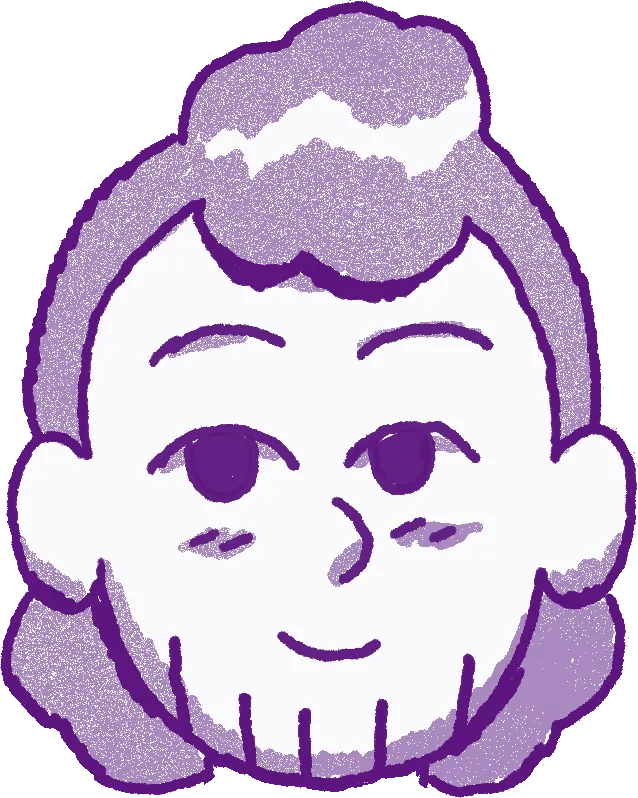

Lucas Padilha
Research
Lucas is a PhD student in Antton Alberdi's group at the Center for Evolutionary Hologenomics, University of Copenhagen, where he studies how gut microbes may help Mediterranean wall lizards change what they eat. He was born in Brazil, moved to Portugal and finished his studies in Bergen. The diary follows his fieldwork and experiments.
Ida Eva Smiseth Neverdahl
Drawings
Ida is a comics artist and illustrator from Stavanger, trained at the Bergen Academy of Art and Design. Her strip Gelé has run in Nemi, and her books include Moskva (with Øystein Runde), Gelé and I'm a girl, it's fantastic, which won the Norwegian Ministry of Culture's comics prize. She drew both the picture book and the diary.